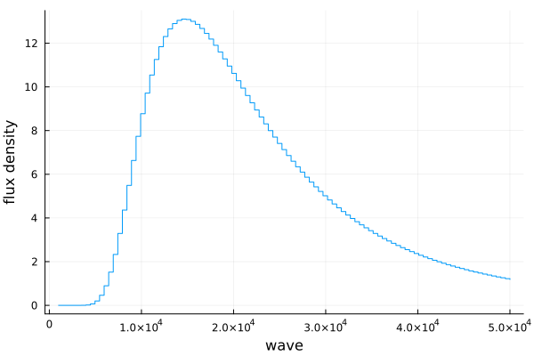

Spectrum
Here we will go over the different spectral types and how we use them.
Types
Spectra are defined as possible subtypes of AbstractSpectrum. You can use these directly for construction, or use the catch-all spectrum function, which is preferred.
Spectra.Spectrum — Type.Spectrum <: AbstractSpectrumA 1-dimensional spectrum stored as vectors of real numbers. The wavelengths are assumed to be in angstrom.
Spectra.UnitfulSpectrum — Type.UnitfulSpectrum <: AbstractSpectrumA 1-dimensional spectrum stored as vectors of quantities.
Constructors
Spectra.spectrum — Function.spectrum(wave::Vector{<:Real}, flux::Vector{<:Real}; kwds...)
spectrum(wave::Vector{<:Quantity}, flux::Vector{<:Quantity}; kwds...)Construct a single dimensional astronomical spectrum. Note that the dimensions of each array must be equal or an error will be thrown.
Examples
julia> using Spectra
julia> wave = range(1e4, 4e4, length=1000);
julia> flux = 100 .* ones(size(wave));
julia> spec = spectrum(wave, flux)
Spectrum (1000,)
julia> spec = spectrum(wave, flux, name="Just Noise")
Spectrum (1000,)
name: Just Noise
julia> spec.name
"Just Noise"
There is easy integration with Unitful.jl and its sub-projects and Measurements.jl
julia> using Spectra, Unitful, UnitfulAstro, Measurements
julia> wave = range(1, 4, length=1000)u"μm";
julia> sigma = randn(size(wave));
julia> flux = (100 .± sigma)u"erg/cm^2/s/angstrom";
julia> spec = spectrum(wave, flux)
UnitfulSpectrum (1000,)
λ (μm) f (erg Å^-1 cm^-2 s^-1)
Spectra.blackbody — Function.blackbody(wave::Vector{<:Quantity}, T::Quantity)
blackbody(wave::Vector{<:Real}, T::Real)Create a blackbody spectrum using Planck's law. The curve follows the mathematical form
$B_\lambda(T) = \frac{2hc^2}{\lambda^5}\frac{1}{e^{hc/\lambda k_B T} - 1}$
If wave and T are not Unitful.Quantity, they are assumed to be in angstrom and Kelvin, and the returned flux will be in units W m^-2 Å^-1.
The physical constants are calculated using PhysicalConstants.jl, specifically the CODATA2018 measurement set.
References
Examples
julia> using Spectra, Unitful, UnitfulAstro
julia> wave = range(1, 3, length=100)u"μm"
(1.0:0.020202020202020204:3.0) μm
julia> bb = blackbody(wave, 2000u"K")
UnitfulSpectrum (100,)
λ (μm) f (W μm^-1 m^-2)
T: 2000 K
name: Blackbody
julia> blackbody(ustrip.(u"angstrom", wave), 6000)
Spectrum (100,)
T: 6000
name: Blackbody
julia> bb.wave[argmax(bb)]
1.4444444444444444 μm
julia> 2898u"μm*K" / bb.T # See if it matches up with Wien's law
1.449 μmBasic operations
For more advanced transformations, see Transformations
| Function |
|---|
Base.length(::AbstractSpectrum) |
Base.size(::AbstractSpectrum) |
Base.maximum(::AbstractSpectrum) |
Base.minimum(::AbstractSpectrum) |
Base.argmax(::AbstractSpectrum) |
Base.argmin(::AbstractSpectrum) |
Base.findmax(::AbstractSpectrum) |
Base.findmin(::AbstractSpectrum) |
Arithmetic
| Function |
|---|
+(::AbstractSpectrum, A) |
-(::AbstractSpectrum, A) |
*(::AbstractSpectrum, A) |
/(::AbstractSpectrum, A) |
Unitful helpers
Unitful.unit — Function.Unitful.unit(::UnitfulSpectrum)Get the units of a spectrum. Returns a tuple of the wavelength units and flux/sigma units
Examples
julia> using Spectra, Unitful, UnitfulAstro
julia> wave = range(1e4, 3e4, length=1000);
julia> flux = wave .* 10 .+ randn(1000);
julia> spec = spectrum(wave * u"angstrom", flux * u"W/m^2/angstrom");
julia> w_unit, f_unit = unit(spec)
(Å, W Å^-1 m^-2)
Unitful.ustrip — Function.Unitful.ustrip(::UnitfulSpectrum)Remove the units from a spectrum. Useful for processing spectra in tools that don't play nicely with Unitful.jl
Examples
julia> using Spectra, Unitful, UnitfulAstro
julia> wave = range(1e4, 3e4, length=1000);
julia> flux = wave .* 10 .+ randn(1000);
julia> spec = spectrum(wave*u"angstrom", flux*u"W/m^2/angstrom")
UnitfulSpectrum (1000,)
λ (Å) f (W Å^-1 m^-2)
julia> ustrip(spec)
Spectrum (1000,)
Plotting
We provide simple plotting recipes for spectra using Plots.jl
using Plots, Spectra
wave = range(1e3, 5e4, length=100)
spec = blackbody(wave, 2000)
plot(spec)/home/travis/.julia/packages/GR/ZI5OE/src/../deps/gr/bin/gksqt: error while loading shared libraries: libQt5Widgets.so.5: cannot open shared object file: No such file or directory
connect: Connection refused
GKS: can't connect to GKS socket application
Did you start 'gksqt'?
GKS: Open failed in routine OPEN_WS
GKS: GKS not in proper state. GKS must be either in the state WSOP or WSAC in routine ACTIVATE_WS